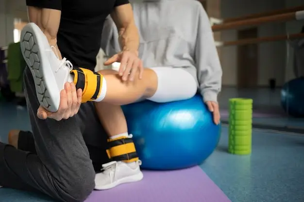

Nosotros
En Fisio Carrillo, somos un Centro de Terapia Física y Rehabilitación ubicado en Av. José Carlos Mariátegui 2350. Nuestro equipo está encabezado por el Lic. Jerjes Mariluz, colegiado por el CTMP y con una Segunda Especialidad por la Universidad Norbert Wiener. Nos especializamos en evaluar, planificar y diseñar tratamientos personalizados para la recuperación de nuestros pacientes.
Misión
En Fisio Carrillo, estamos comprometidos a ofrecer atención de calidad y calidez, siempre centrados en el paciente. Nos dedicamos a promover la recuperación, el bienestar y la mejora de la calidad de vida, diseñando planes de tratamiento personalizados que aborden las necesidades y objetivos de salud de cada paciente.
Visión
Queremos ser reconocidos como un centro líder en terapia física y rehabilitación, innovando constantemente en nuestras prácticas y tecnologías. Estableceremos un estándar de excelencia en la atención al paciente, convirtiéndonos en un referente en Villa María del Triunfo y San Juan de Miraflores, promoviendo la salud a través del diagnóstico, la educación y la rehabilitación efectiva.
Servicios
Terapia Deportiva
Es una rama de la Terapia Fisica que permite que los deportistas vuelvan a su estado físico y mejoren su confianza por medio del fortalecimiento y la recuperación de músculos, ligamentos, articulaciones, etc. sin la necesidad de una intervención quirúrgica o de medicamentos.

Terapia Geriatrica
En Perú es una segunda especialidad de la fisioterapia que trabaja la prevención, diagnóstico y tratamiento de las patologías de personas de edad avanzada. Se basa en formas concretas de aplicación y adaptación de las personas mayores y es una disciplina fundamental a la hora de tratar enfermedades derivadas del envejecimiento.

Terapia Fisica y Rehabilitacion Pediatrica

La fisioterapia pediátrica es la disciplina de la fisioterapia que se encarga del asesoramiento, tratamiento y cuidado de aquellos bebés, niños/as y adolescentes que presentan un retraso general en su desarrollo, desórdenes en el movimiento (tanto congénitos como adquiridos) o que tienen riesgo de padecerlos.
Lumbalgia
Es la presencia de dolor en la región lumbar, es decir, en la espalda y cintura, que con frecuencia se recorre a los glúteos y muslos; generalmente se presenta después de realizar un gran esfuerzo con una postura inadecuada.
Tendinitis
Es una inflamación del tendón de alguna región del cuerpo, estructura formada por un tejido conjuntivo encargado de unir el músculo al hueso para así poder realizar una fuerza de contracción adecuada.
Esguince
Es un estiramiento o desgarro de los ligamentos, las bandas resistentes de tejido fibroso que conectan dos huesos en las articulaciones. La ubicación más común de un esguince es el tobillo, existen diversos tipos de esguince.
Hernias Discales
El disco se puede salir de su lugar (herniarse) o romperse a causa de una lesión o distensión. Cuando esto sucede, puede haber presión sobre uno o más nervios raquídeos. Esto puede llevar a que se presente dolor, entumecimiento o debilidad.
Hombro Doloroso
Las causas que pueden desencadenar una patología o lesión en el hombro y estar en la degeneración de los tendones por desgaste, esfuerzos físicos laborales o deportivos de forma repetitiva, y traumatismos violentos.
Lumbo Ciática
Dolor en la zona lumbar que se irradia hacia la extremidad inferior de una o ambas piernas, llegando a veces incluso hasta el pie. La molestia es constante, se da durante el día y la noche, Se puede acompañar también de déficit sensitivo o de fuerza. Se sugiere evaluación en Fisioterapia.
Pie Plano
Es una afección común, en la que los arcos de la parte interna del pie se aplanan cuando se ejerce presión sobre ellos. Cuando las personas con pie plano se ponen de pie, el pie se orienta hacia afuera y toda la planta del pie cae y toca el piso, Existen grados de pie plano.
Escoliosis
Es una curvatura lateral de la columna vertebral. Los niños y los adolescentes con escoliosis tienen una curvatura anormal de la columna vertebral en forma de S o de C. Las radiografías ayudan a determinar el tipo de escoliosis, la evaluación en fisioterapia es importante.
Sindrome del Tunel Carpiano
Afección en la cual existe una presión excesiva en el nervio mediano en la muñeca. Este es el nervio que permite la sensibilidad y el movimiento a partes de la mano, al ser alterado genera debilidad, dolor e incluso perdida de la fuerza, la evaluación en fisioterapia es importante.
Paralisis Facial
Consiste en la pérdida total o parcial de movimiento muscular voluntario en un lado de la cara. Se produce por un fallo en el nervio facial, que no lleva las órdenes nerviosas a los principales músculos de la cara.
Parkinson

Es un trastorno del cerebro que provoca movimientos involuntarios o incontrolables, como temblores, rigidez y dificultad con el equilibrio y la coordinación. Por lo general, los síntomas comienzan poco a poco y empeoran con el tiempo, existen diversas fases.
Hemiplejia

Es la parálisis completa o incompleta de la mitad del cuerpo. Cuando aparece de forma aguda y rápida se denomina accidente vascular cerebral, y suele producirse por una embolia o por una hemorragia.
Artritis
Es una enfermedad que implica la inflamación de una o más articulaciones, lo que causa dolor, hinchazón, rigidez y pérdida de movimiento. Esta condición puede afectar cualquier articulación del cuerpo, pero es más común en las manos, las rodillas, las caderas y la columna vertebral.